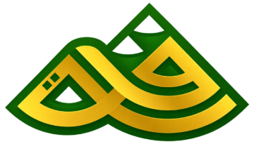

Satu santri, dari pendaftaran sampai kuitansi
1Petugas pendaftaran
Panah kiri dan kanan untuk pindah langkah. Data di semua gambar adalah contoh, bukan data lembaga.
Demo ini butuh JavaScript. Semua layar yang sama bisa dilihat di halaman penawaran.